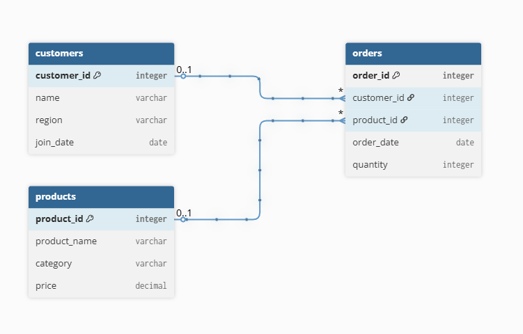

Featured Projects

Data Detective Project: Retail Transaction Analysis
Analyzed 24 months of transactional data for an online electronics retailer, identifying seasonal sales dips and high-value customer segments. Key outcome: insights were used to launch a targeted "Winter Slump" recovery campaign, optimizing Q3 marketing budget and improving customer retention.
Livestock Data Analytics Platform
Developed a Django-based platform for tracking and analyzing cattle data, focusing on weight trends, breed performance, and health metrics. This system provides actionable insights for optimizing livestock management and improving profitability.

Brew Analytics Executive Dashboard
Created an automated Power BI dashboard for JO4 BREW, transforming ERP SQLite transaction logs from Excel into visual insights. Tracks daily profitability, ingredient waste, and customer peak-hour trends with a sales "Heat Map" for identifying optimal mobile unit locations and "Dead Zones".

Predictive Real Estate Market Modeler
Developed a Python (Pandas/Scikit-Learn) and SQL tool to predict property price trends in Gauteng. Utilizes historical housing data, calculating moving averages and price-per-square-meter across neighborhoods, and employs Linear Regression to identify "Undervalued" areas with high growth potential.

IT Support Infrastructure Optimization Audit
Conducted an operational analytics audit of 5,000+ simulated support tickets using complex SQL queries (JOINS, CTEs) and Power BI. Identified hardware failure patterns and correlated device models with support volume, revealing that 20% of models caused 80% of tickets, informing inventory strategy optimizations.
Education & Experience
Diploma in Information Technology
Richfield College
Provided a strong foundation in data systems, logical programming, and effective data presentation. This curriculum emphasized using information technology to derive business insights, covering database management, data structures, and the communication of complex data.
Oracle Database SQL (1Z0-071) Associate
Oracle University
Demonstrated foundational SQL skills for database management and manipulation.
Owner/Operator
JO4 BREW
Managed end-to-end business strategy, advertising, and technical infrastructure.
IT & Data Support Assistant
AP CELLULAR
Focused on technical troubleshooting, data integrity, and hardware maintenance.
Real Estate Agent
Larney Properties
Specialized in sales operations, marketing strategy, and client negotiations.
Get In Touch
Let's Work Together
Looking for a skilled Data Analyst to unlock insights from your data or drive strategic decision-making? I'm available for freelance projects, data consulting, and ongoing analytical support.
Message Sent Successfully!
Thank you for reaching out. I'll get back to you soon to discuss your data analysis and business intelligence needs.